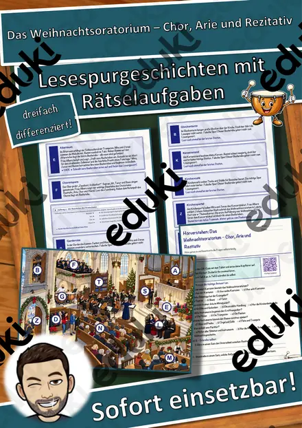
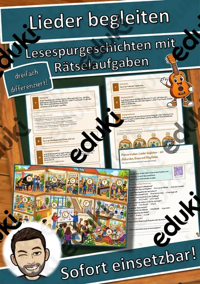
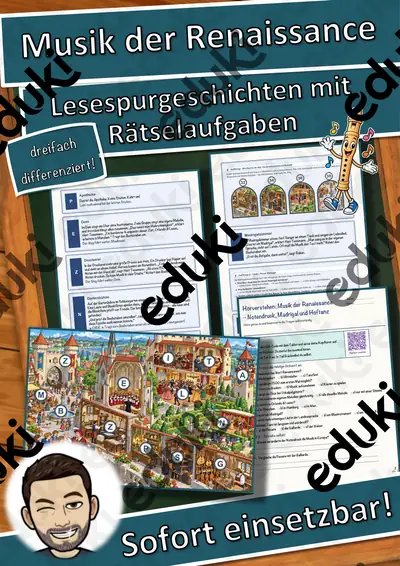
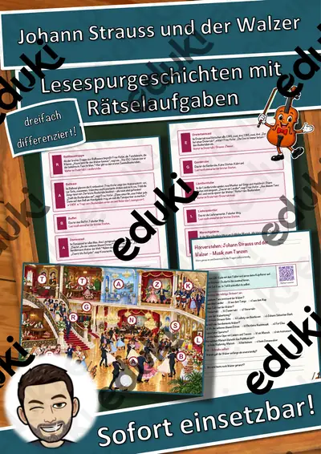
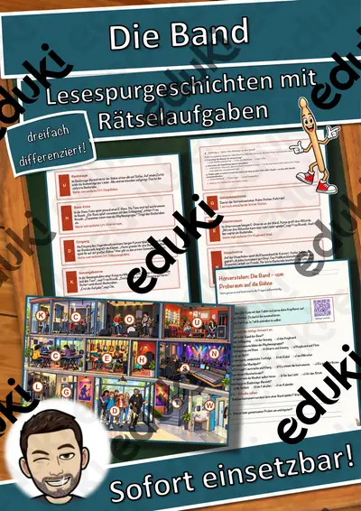
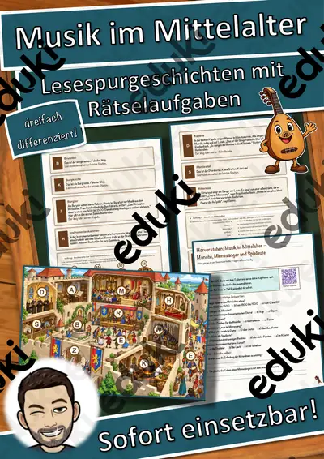
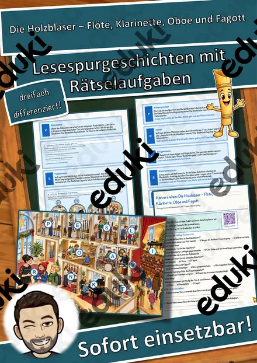
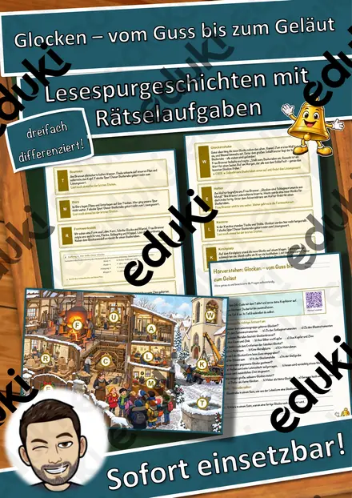

Johann Sebastian Bach und die Musik des Barock – Lesespurgeschichte mit Rätselaufgaben (Klasse 7)
Johann Sebastian Bach und die Musik des Barock – Lesespurgeschichte Musik (Klasse 7)Begib dich mit deiner Klasse auf eine spannende Lesespur in die prächtige Welt des Barock! Hanno und Lina erleben mit ihrer Klasse einen Barocktag im Bach-Museum in Leipzig: Im Familienzimmer staunen sie über die riesige Musikerfamilie Bach, auf der Orgelempore über den großen Organisten, in der Kantorstube erfahren sie, wie Bach als Thomaskantor fast jede Woche eine neue Kantate schrieb. Im Cembalozimmer hören sie gezupfte Saiten und den Generalbass, im Fugenlabyrinth wandert ein Thema durch alle Stimmen, im Echosaal wechselt die Musik stufenweise zwischen laut und leise. Im Tanzsaal wird Menuett getanzt, im Konzertzimmer erklingt ein Concerto – und im Musiziergarten spielen alle selbst. Ihr Cembalo Cembali ist immer dabei. Am Ende jedes Abschnitts verrät ein Hinweis den nächsten Ort auf dem Museumsplan – nur wer genau liest, findet den Weg und sammelt alle geheimen Buchstaben zum Lösungswort.
Die perfekte Lesespur für den MUSIKUNTERRICHT der 7. Klasse – ideal als Einstieg in die Epoche des Barock: Sie verbindet sinnentnehmendes Lesen mit Fachbegriffen, Komponistenbiografie und dem Hören barocker Musik. Das Material ist SOFORT EINSETZBAR und in DREI DIFFERENZIERUNGSSTUFEN (leicht ★ / mittel ★★ / schwer ★★★) angelegt.WICHTIG: Das komplette Material ist sowohl in FARBE als auch in SCHWARZ-WEISS enthalten – ideal zum Sparen von Druckkosten.DAS IST ENTHALTEN
- Lesespurgeschichte in 3 Niveaus (leicht, mittel, schwer)
- farbiger Museumsplan als Suchkarte
- Hörverstehen mit QR-Code zur MP3 (selbstständiges Hören mit Kopfhörern)
- vier Aufträge auf dem Weg: ein Quiz, eine Zuordnung, eine Rechenaufgabe und ein Steckbrief
- Rätselseite (Wörter-Suchsel + Fragen)
- Ausmalbild zum Thema (Barocksaal mit Cembalo und Tanzpaaren)
- ausführliches Lösungsblatt für die Lehrkraft
- alles zusätzlich als komplette Schwarz-Weiß-VarianteSO GEHT DIE LESESPURDie Jugendlichen lesen ab START, finden im Text den nächsten Ort, suchen ihn auf dem Museumsplan und lesen bei dieser Station weiter. An jeder richtigen Station gibt es einen Buchstaben. Eingebaute Sackgassen (Kasse, Museumsladen, Treppenhaus, Café) sind keine Stationen und dienen der Selbstkontrolle. Am Ende werden die gesammelten Buchstaben umgestellt und ergeben ein geheimes Lösungswort. (Die Lösungen sind selbstverständlich nur im Lösungsblatt für die Lehrkraft enthalten.)INHALTLICHER SCHWERPUNKTDie Jugendlichen lernen die Barockzeit und Johann Sebastian Bach kennen, beschreiben Merkmale barocker Musik wie Generalbass, Polyphonie und Fuge, Terrassendynamik, Suite und Concerto und erfahren, wie Bachs Musik nach seinem Tod wiederentdeckt wurde.ABGEDECKTER LEHRPLAN (Klasse 7, Musik)
- Musik (LehrplanPLUS Bayern) – Jahrgangsstufe 7 „Epochen – Barock“: Merkmale barocker Musik kennen, Leben und Werk Bachs einordnen und Barockmusik hörend und musizierend erschließen.
- Deutsch – Lesen und mit Texten umgehen: Sachinformationen gezielt entnehmen und verknüpfen; Zuhören: einem Sachhörtext konzentriert folgen (Hörverstehen mit MP3).
- Mathematik – Rechnen mit Jahreszahlen, Multiplikation.
- Fächerübergreifend / Kompetenzen: Geschichte (Absolutismus, Barock), Kunst (Barockarchitektur), Sport (historischer Tanz), genaues Lesen und Prüfen, kreatives Gestalten (Ausmalbild).
Geeignet für Freiarbeit, Stationenlernen, Vertretungsstunden, Wochenplan, Projekttage und Distanzunterricht. Klassenstufe 7.
Ähnliche Materialien

Das Weihnachtsoratorium – Chor, Arie und Rezitativ – Lesespurgeschichte mit Rätselaufgaben (Klasse 7)

Lieder begleiten – mit Akkorden, Bass und Rhythmus – Lesespurgeschichte mit Rätselaufgaben (Klasse 7)

Musik der Renaissance – Notendruck, Madrigal und Hoftanz – Lesespurgeschichte mit Rätselaufgaben (Klasse 7)

Johann Strauss und der Walzer – Musik zum Tanzen – Lesespurgeschichte mit Rätselaufgaben (Klasse 7)

Die Band – vom Proberaum auf die Bühne – Lesespurgeschichte mit Rätselaufgaben (Klasse 7)

Musik im Mittelalter – Mönche, Minnesänger und Spielleute – Lesespurgeschichte mit Rätselaufgaben (Klasse 7)

Die Holzbläser – Flöte, Klarinette, Oboe und Fagott – Lesespurgeschichte mit Rätselaufgaben (Klasse 5)
